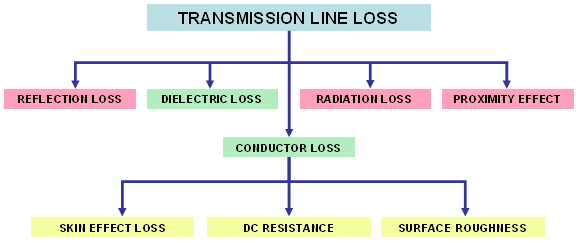
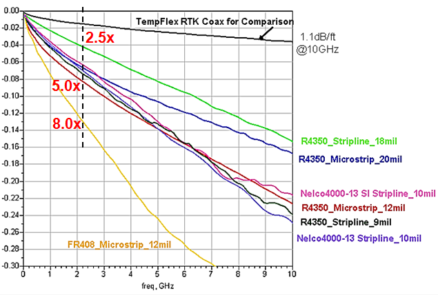

RF losses and path losses
RF loss mechanisms
From an electrical standpoint, losses are the main driving factor of a PCB design at RF frequencies. Typical losses on DUT boards are in excess of 2.0 dBc. This means that, compared to the original signal, only 60% or 65% of the signal power is available at the output port of the DUT board. The most important loss mechanisms are:

For RF traces the two most important loss components are dielectric loss and skin effect loss. See also Signal integrity challenge.
Path losses
Path losses are the most critical parameters in RF DUT boards at high frequencies.
Try to use coaxial cables for each site and place the connection point for the RF path as close as possible to the DUT socket. RF losses in coaxial cables are significantly lower than in any other propagating media inside the DUT board. To minimize RF loss, you need to minimize the routing distance outside of the cable.
The graphic below illustrates the typical RF path loss per centimeter of various materials, with removed fixture, compared to a typical TempFlex RTK coaxial cable.

Consider a 3G WLAN with typically 2.7 GHz at its highest band. When using the expensive, low loss Roger R4350 material and a really wide stripline trace, RF losses are about two and a half times higher than in the coaxial cable. This is close to the optimum you can achieve in a DUT board.
A more realistic 12 mil microstrip with R4350 material would yield five times of the loss, while an inexpensive FR408 material would yield eight times of the loss in the coaxial cable.
Still, even 2 to 3 cm routing with a 12 mil microstrip in FR408 would yield less than 0.50 dB of RF loss. This is a relatively small fraction of the overall RF losses on DUT boards, which are typically 2 to 3 dB.
Functional changes
- Introduced in SmarTest 7.2.0